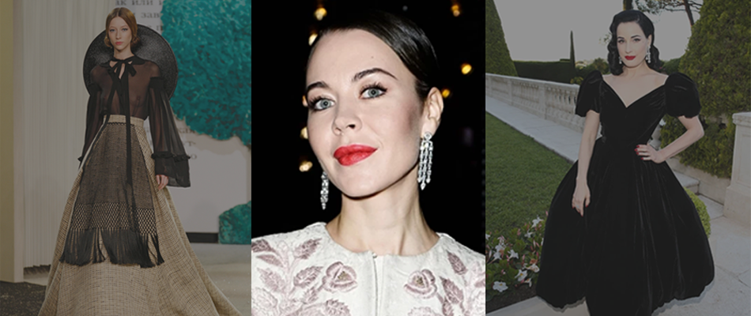
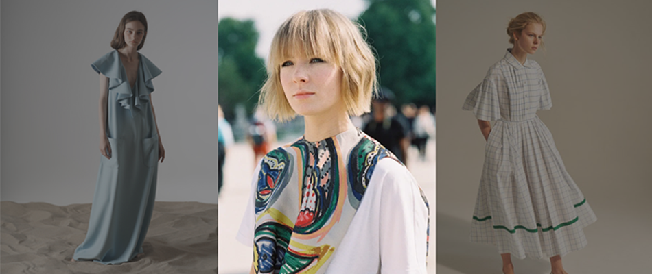
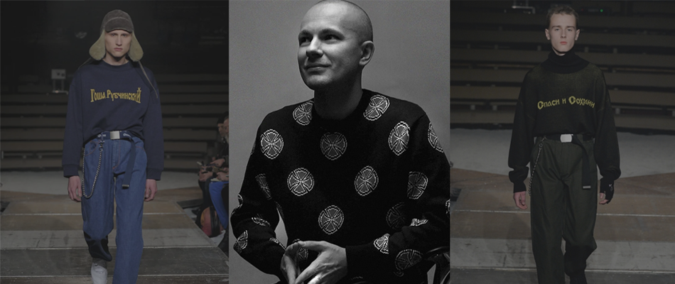
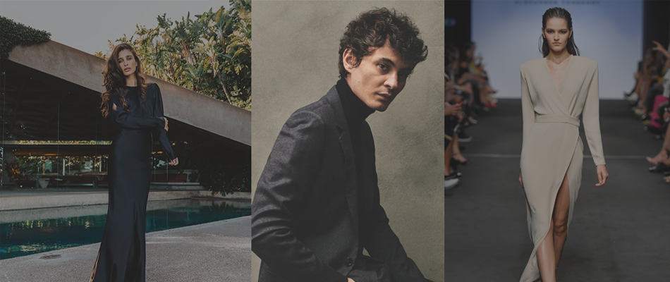

Ульяна Сергеенко
Бренд Ulyana Sergeenko стал настоящей сенсацией на Западе. После
дебютного показа коллекции, который состоялся в Париже в 2011
году, модные СМИ прозвали стиль российского дизайнера
«babushka». И это вполне оправдано, ведь в своих работах Ульяна
органично сочетает элементы народной одежды, костюма
аристократии России, эстетику богемы Серебряного века и
последние fashion-тенденции.

Вика Газинская
Работы этого российского дизайнера по-настоящему уникальны в
своем роде. Вика предпочитает сложный архитектурный крой, любит
лаконичность, минимализм, избегает блестящих тканей и цветочных
мотивов, при этом каждое творение доводит до совершенства. Еще
во время обучения молодой дизайнер начала собирать российские и
международные награды: «Русский силуэт», ANDAM Fashion Award. А
модные журналы Harper’s Bazaar и American Vogue не раз
публиковали коллекции бренда Vika Gazinskaya.

Гоша Рубчинский
Бренд Gosha Rubchinskiy, как и сам дизайнер, невероятно
популярен, его коллекции продаются по всему миру – от США до
Японии. Стиль марки не имеет ничего общего с гламуром и haute
couture, но это не помешало ему стать олицетворением российской
моды для большей части западной аудитории. Создавая модели и
образы, Гоша вдохновляется 80-ми, 90-ми и нулевыми годами нашей
страны, отчего в его коллекциях присутствуют вызывающие майки с
гербом СССР, спортивные штаны и джинсовые рубашки с
патриотическими лозунгами.

Александр Терехов
Еще один звездный дизайнер российской индустрии моды. Свою
карьеру он начал во время обучения в институте, когда занял
призовое место в престижном конкурсе «Русский силуэт». Позднее
ему представилась возможность пройти стажировку в легендарном
доме моды Yves Saint Laurent в Париже под руководством самого
маэстро Ива Сен-Лорана. Бренд Alexander Terekhov появился на
свет в 2004 году, а уже через 3 года вошел в Топ-10 лучших
современных дизайнеров в рейтинге Style.com. Александр
пропагандирует женственность, идеальный крой и элегантность.
Интересно, что в поисках вдохновения модельер прибегает к
нестандартным методам, например, коллекцию The Great and
Powerful он создал в сотрудничестве с компанией Walt Disney, в
результате свет увидел потрясающие платья по мотивам фильма
«Волшебник страны Оз».